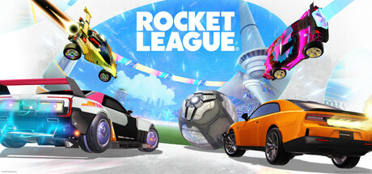

Bienvenido a RL Community, un sitio dedicado a todos los fanáticos de Rocket League. En esta web vas a encontrar información sobre el juego, sus modos de juego, novedades y características principales. En la sección Comunidad podrás conocer las últimas actualizaciones, descubrir noticias, ver publicaciones y compartir tus propias experiencias. Además, en la sección Rangos encontrarás información sobre el sistema competitivo, las divisiones y las estadísticas de los jugadores. El objetivo de esta página es reunir en un solo lugar todo lo relacionado con Rocket League y ofrecer un espacio para que los jugadores se mantengan informados y conectados con la comunidad.
¿Cómo no incluir la intro más famosa de Rocket League?
¿Qué es Rocket League?
Rocket League es un videojuego de deportes y acción desarrollado por Psyonix. Combina elementos de fútbol con vehículos acrobáticos, donde los jugadores controlan autos propulsados por cohetes para golpear una pelota gigante y marcar goles en el campo de juego. El juego ofrece una experiencia multijugador en línea, permitiendo a los jugadores competir en partidos rápidos y emocionantes. Rocket League ha ganado popularidad por su jugabilidad adictiva, gráficos coloridos y la posibilidad de personalizar los vehículos con diferentes aspectos y accesorios. Además, cuenta con modos de juego competitivos y eventos especiales que mantienen a la comunidad activa y comprometida.
Datos interesantes
- Desarrollador: Psyonix.
- Año de lanzamiento: 2015.
- Modos de juego competitivos: 1v1, 2v2 y 3v3.
Preguntas frecuentes
¿¿Rocket League es gratis??
Sí, Rocket League es gratuito y está disponible en PC y consolas compatibles.
¿Qué es el MMR?
El MMR es una puntuación interna que utiliza el juego para estimar tu nivel competitivo y emparejarte con jugadores de habilidad similar.
¿Puedo jugar con amigos de otras plataformas?
Sí, Rocket League permite el juego multiplataforma entre las plataformas compatibles.